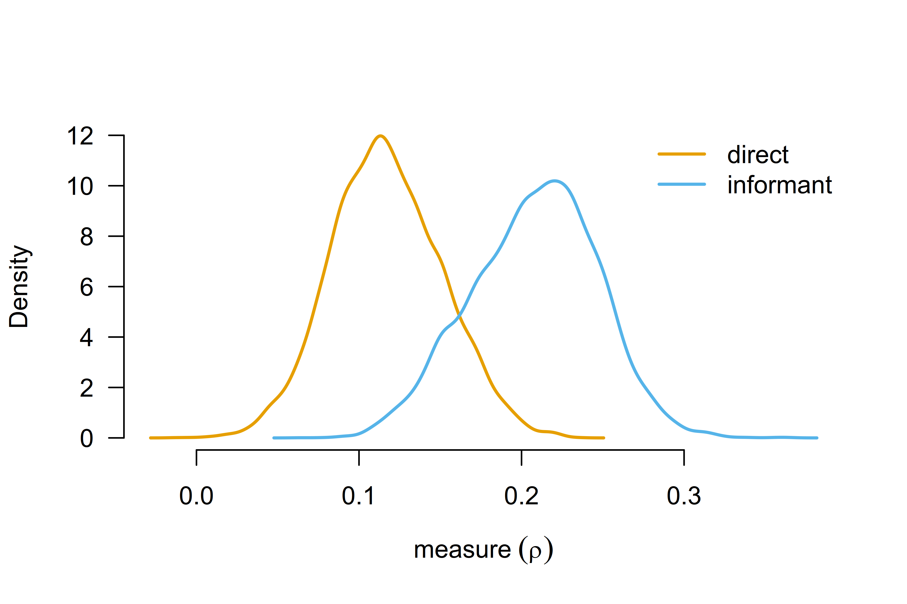
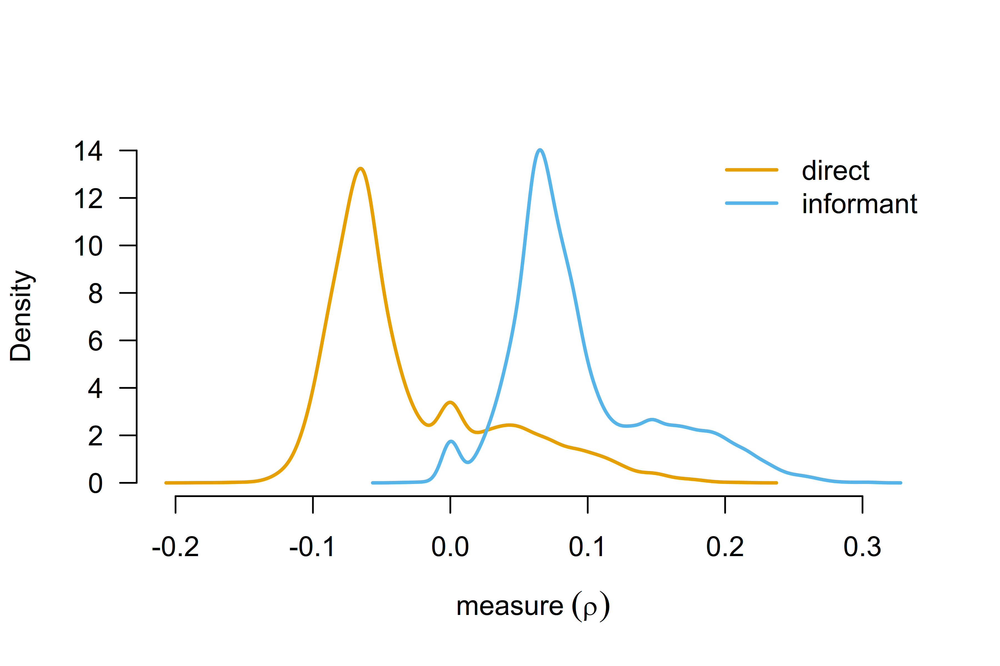

Robust Bayesian Model-Averaged Meta-Regression
František Bartoš
2025-07-17
Source:vignettes/MetaRegression.Rmd
MetaRegression.RmdRobust Bayesian model-averaged meta-regression (RoBMA-reg) extends
the robust Bayesian model-averaged meta-analysis (RoBMA) by including
covariates in the meta-analytic model. RoBMA-reg allows for estimating
and testing the moderating effects of study-level covariates on the
meta-analytic effect in a unified framework (e.g., accounting for
uncertainty in the presence vs. absence of the effect, heterogeneity,
and publication bias). This vignette illustrates how to fit a robust
Bayesian model-averaged meta-regression using the RoBMA R
package. We reproduce the example from Bartoš et
al. (2025), who re-analyzed a meta-analysis of the effect of
household chaos on child executive functions with the mean age and
assessment type covariates based on Andrews et
al. (2021)’s meta-analysis.
First, we fit a frequentist meta-regression using the
metafor R package. Second, we explain the Bayesian
meta-regression model specification, the default prior distributions for
continuous and categorical moderators, and standardized effect sizes
input specification. Third, we estimate Bayesian model-averaged
meta-regression (without publication bias adjustment). Finally, we
estimate the complete robust Bayesian model-averaged
meta-regression.
Data
We start by loading the Andrews2021 dataset included in
the RoBMA R package, which contains 36 estimates of the
effect of household chaos on child executive functions with the mean age
and assessment type covariates. The dataset includes correlation
coefficients (r), standard errors of the correlation
coefficients (se), the type of executive function
assessment (measure), and the mean age of the children
(age) in each study.
library(RoBMA)
data("Andrews2021", package = "RoBMA")
head(Andrews2021)
#> r se measure age
#> 1 0.070 0.04743416 direct 4.606660
#> 2 0.033 0.04371499 direct 2.480833
#> 3 0.170 0.10583005 direct 7.750000
#> 4 0.208 0.08661986 direct 4.000000
#> 5 0.270 0.02641969 direct 4.000000
#> 6 0.170 0.05147815 direct 4.487500Frequentist Meta-Regression
We start by fitting a frequentist meta-regression using the
metafor R package (Wolfgang,
2010). While Andrews et al. (2021)
estimated univariate meta-regressions for each moderator, we directly
proceed by analyzing both moderators simultaneously. For consistency
with original reporting, we estimate the meta-regression using the
correlation coefficients and the standard errors provided by (Andrews et al., 2021); however, note that
Fisher’s z transformation is recommended for estimating meta-analytic
models (e.g., Stanley et al. (2024)).
fit_rma <- metafor::rma(yi = r, sei = se, mods = ~ measure + age, data = Andrews2021)
fit_rma
#>
#> Mixed-Effects Model (k = 36; tau^2 estimator: REML)
#>
#> tau^2 (estimated amount of residual heterogeneity): 0.0150 (SE = 0.0045)
#> tau (square root of estimated tau^2 value): 0.1226
#> I^2 (residual heterogeneity / unaccounted variability): 91.28%
#> H^2 (unaccounted variability / sampling variability): 11.47
#> R^2 (amount of heterogeneity accounted for): 15.24%
#>
#> Test for Residual Heterogeneity:
#> QE(df = 33) = 340.7613, p-val < .0001
#>
#> Test of Moderators (coefficients 2:3):
#> QM(df = 2) = 7.5445, p-val = 0.0230
#>
#> Model Results:
#>
#> estimate se zval pval ci.lb ci.ub
#> intrcpt 0.0898 0.0467 1.9232 0.0545 -0.0017 0.1813 .
#> measureinformant 0.1202 0.0466 2.5806 0.0099 0.0289 0.2115 **
#> age 0.0030 0.0062 0.4867 0.6265 -0.0091 0.0151
#>
#> ---
#> Signif. codes: 0 '***' 0.001 '**' 0.01 '*' 0.05 '.' 0.1 ' ' 1The results reveal a statistically significant moderation effect of
the executive function assessment type on the effect of household chaos
on child executive functions
().
To explore the moderation effect further, we estimate the estimated
marginal means for the executive function assessment type using the
emmeans R package (Lenth et al.,
2017).
emmeans::emmeans(metafor::emmprep(fit_rma), specs = "measure")
#> measure emmean SE df asymp.LCL asymp.UCL
#> direct 0.109 0.0305 Inf 0.0492 0.169
#> informant 0.229 0.0347 Inf 0.1612 0.297
#>
#> Confidence level used: 0.95Studies using the informant-completed questionnaires show a stronger effect of household chaos on child executive functions, r = 0.229, 95% CI [0.161, 0.297], than the direct assessment, r = 0.109, 95% CI [0.049, 0.169]; both types of studies show statistically significant effects.
The mean age of the children does not significantly moderate the effect () with the estimated regression coefficient of b = 0.003, 95% CI [-0.009, 0.015]. As usual, frequentist inference limits us to failing to reject the null hypothesis. Here, we try to overcome this limitation with Bayesian model-averaged meta-regression.
Bayesian Meta-Regression Specification
Before we proceed with the Bayesian model-averaged meta-regression, we provide a quick overview of the regression model specification. In contrast to frequentist meta-regression, we need to specify prior distributions on the regression coefficients, which encode the tested hypotheses about the presence vs. absence of the moderation (specifying different prior distributions corresponds to different hypotheses and results in different conclusions). Importantly, the treatment of continuous and categorical covariates differs in the Bayesian model-averaged meta-regression.
Continuous vs. Categorical Moderators and Default Prior Distributions
The default prior distribution for continuous moderators is a normal
prior distribution with mean of 0 and a standard deviation of 1/4. In
other words, the default prior distribution assumes that the effect of
the moderator is small and smaller moderation effects are more likely
than larger effects. The default choice for continuous moderators can be
overridden by the prior_covariates argument (for all
continuous covariates) or by the priors argument (for
specific covariates, see ?RoBMA.reg for more information).
The package automatically standardizes the continuous moderators. This
achieves scale-invariance of the specified prior distributions and
ensures that the prior distribution for the intercept correspond to the
grand mean effect. This setting can be overridden by specifying the
standardize_predictors = FALSE argument.
The default prior distribution for the categorical moderators is a
normal distribution with a mean of 0 and a standard deviation of 1/4,
representing the deviation of each level from the grand mean effect. The
package uses standardized orthonormal contrasts
(contrast = "meandif") to model deviations of each category
from the grand mean effect. The default choice for categorical
moderators can be overridden by the prior_factors argument
(for all categorical covariates) or by the priors argument
(for specific covariates, see ?RoBMA.reg for more
information). The "meandif" contrasts achieve label
invariance (i.e., the coding of the categorical covariates does not
affect the results) and the prior distribution for the intercept
corresponds to the grand mean effect. Alternatively, the package also
allows specifying "treatment" contrasts, which result in a
prior distribution on the difference between the default level and the
remaining levels of the categorical covariate (with the intercept
corresponding to the effect in the default factor level).
Effect Size Input Specification
Prior distributions for Bayesian meta-analyses are calibrated for the
standardized effect size measures. As such, the fitting function needs
to know what kind of effect size was supplied as the input. In
RoBMA() function, this is achieved by the d,
r, logOR, OR, z,
se, v, n, lCI, and
uCI arguments. The input is passed to the
combine_data() function in the background that combines the
effect sizes and merges them into a single data.frame. The
RoBMA.reg() (and NoBMA.reg()) function
requires the dataset to be passed as a data.frame (without missing
values) with column names identifying the - moderators passed using the
formula interface (i.e., ~ measure + age in our example) -
and the effect sizes and standard errors (i.e., r and
se in our example).
As such, it is crucial for the column names to correctly identify the standardized effect sizes, standard errors, sample sizes, and moderators.
Bayesian Model-Averaged Meta-Regression
We fit the Bayesian model-averaged meta-regression using the
NoBMA.reg() function (the NoBMA.reg() function
is a wrapper around the RoBMA.reg() function that
automatically removes models adjusting for publication bias). We specify
the model formula with the ~ operator similarly to the
rma() function and pass the dataset as a data.frame with
named columns as outlined in the section above (the names need to
identify the moderators and effect size measures). We also set the
parallel = TRUE argument to speed up the computation by
running the chains in parallel and seed = 1 argument to
ensure reproducibility.
fit_BMA <- NoBMA.reg(~ measure + age, data = Andrews2021, parallel = TRUE, seed = 1)Note that the NoBMA.reg() function specifies the
combination of all models assuming presence vs. absence of the effect,
heterogeneity, moderation by measure, and moderation by
age, which corresponds to
models. Including each additional moderator doubles the number of
models, leading to an exponential increase in model count and
significantly longer fitting times.
Once the ensemble is estimated, we can use the summary()
functions with the output_scale = "r" argument, which
produces meta-analytic estimates that are transformed to the correlation
scale.
summary(fit_BMA, output_scale = "r")
#> Call:
#> RoBMA.reg(formula = formula, data = data, test_predictors = test_predictors,
#> study_names = study_names, study_ids = study_ids, transformation = transformation,
#> prior_scale = prior_scale, standardize_predictors = standardize_predictors,
#> effect_direction = "positive", priors = priors, model_type = model_type,
#> priors_effect = priors_effect, priors_heterogeneity = priors_heterogeneity,
#> priors_bias = NULL, priors_effect_null = priors_effect_null,
#> priors_heterogeneity_null = priors_heterogeneity_null, priors_bias_null = prior_none(),
#> priors_hierarchical = priors_hierarchical, priors_hierarchical_null = priors_hierarchical_null,
#> prior_covariates = prior_covariates, prior_covariates_null = prior_covariates_null,
#> prior_factors = prior_factors, prior_factors_null = prior_factors_null,
#> algorithm = algorithm, chains = chains, sample = sample,
#> burnin = burnin, adapt = adapt, thin = thin, parallel = parallel,
#> autofit = autofit, autofit_control = autofit_control, convergence_checks = convergence_checks,
#> save = save, seed = seed, silent = silent)
#>
#> Bayesian model-averaged meta-regression (normal-normal model)
#> Components summary:
#> Models Prior prob. Post. prob. Inclusion BF
#> Effect 8/16 0.500 1.000 6.643142e+05
#> Heterogeneity 8/16 0.500 1.000 3.438539e+40
#>
#> Meta-regression components summary:
#> Models Prior prob. Post. prob. Inclusion BF
#> measure 8/16 0.500 0.826 4.748
#> age 8/16 0.500 0.197 0.245
#>
#> Model-averaged estimates:
#> Mean Median 0.025 0.975
#> mu 0.163 0.163 0.118 0.208
#> tau 0.121 0.120 0.086 0.167
#> The effect size estimates are summarized on the correlation scale and heterogeneity is summarized on the Fisher's z scale (priors were specified on the Cohen's d scale).
#>
#> Model-averaged meta-regression estimates:
#> Mean Median 0.025 0.975
#> intercept 0.163 0.163 0.118 0.208
#> measure [dif: direct] -0.047 -0.051 -0.099 0.000
#> measure [dif: informant] 0.047 0.051 0.000 0.099
#> age 0.003 0.000 -0.011 0.043
#> The effect size estimates are summarized on the correlation scale and heterogeneity is summarized on the Fisher's z scale (priors were specified on the Cohen's d scale).The summary function produces output with multiple sections The first
section contains the Components summary with the hypothesis
test results for the overall effect size and heterogeneity. We find
overwhelming evidence for both with inclusion Bayes factors
(Inclusion BF) above 10,000.
The second section contains the
Meta-regression components summary with the hypothesis test
results for the moderators. We find moderate evidence for the moderation
by the executive function assessment type,
.
Furthermore, we find moderate evidence for the null hypothesis of no
moderation by mean age of the children,
(i.e., BF for the null is
).
These findings extend the frequentist meta-regression by disentangling
the absence of evidence from the evidence of absence.
The third section contains the Model-averaged estimates
with the model-averaged estimates for mean effect
,
95% CI [0.12, 0.21] and between-study heterogeneity
,
95% CI [0.09, 0.17].
The fourth section contains the
Model-averaged meta-regression estimates with the
model-averaged regression coefficient estimates. The main difference
from the usual frequentist meta-regression output is that the
categorical predictors are summarized as a difference from the grand
mean for each factor level. Here, the intercept regression
coefficient estimate corresponds to the grand mean effect and the
measure [dif: direct] regression coefficient estimate of
-0.047, 95% CI [-0.099, 0.000] corresponds to the difference between the
direct assessment and the grand mean. As such, the results suggest that
the effect size in studies using direct assessment is lower in
comparison to the grand mean of the studies. The age
regression coefficient estimate is standardized, therefore, the increase
of 0.003, 95% CI [-0.011, 0.043] corresponds to the increase in the mean
effect when increasing mean age of children by one standard
deviation.
Similarly to the frequentist meta-regression, we can use the
marginal_summary() function to obtain the marginal
estimates for each of the factor levels.
marginal_summary(fit_BMA, output_scale = "r")
#> Call:
#> RoBMA.reg(formula = formula, data = data, test_predictors = test_predictors,
#> study_names = study_names, study_ids = study_ids, transformation = transformation,
#> prior_scale = prior_scale, standardize_predictors = standardize_predictors,
#> effect_direction = "positive", priors = priors, model_type = model_type,
#> priors_effect = priors_effect, priors_heterogeneity = priors_heterogeneity,
#> priors_bias = NULL, priors_effect_null = priors_effect_null,
#> priors_heterogeneity_null = priors_heterogeneity_null, priors_bias_null = prior_none(),
#> priors_hierarchical = priors_hierarchical, priors_hierarchical_null = priors_hierarchical_null,
#> prior_covariates = prior_covariates, prior_covariates_null = prior_covariates_null,
#> prior_factors = prior_factors, prior_factors_null = prior_factors_null,
#> algorithm = algorithm, chains = chains, sample = sample,
#> burnin = burnin, adapt = adapt, thin = thin, parallel = parallel,
#> autofit = autofit, autofit_control = autofit_control, convergence_checks = convergence_checks,
#> save = save, seed = seed, silent = silent)
#>
#> Robust Bayesian meta-analysis
#> Model-averaged marginal estimates:
#> Mean Median 0.025 0.975 Inclusion BF
#> intercept 0.163 0.163 0.118 0.208 Inf
#> measure[direct] 0.117 0.116 0.052 0.185 62.803
#> measure[informant] 0.208 0.210 0.130 0.280 Inf
#> age[-1SD] 0.160 0.161 0.106 0.208 Inf
#> age[0SD] 0.163 0.163 0.118 0.208 Inf
#> age[1SD] 0.166 0.165 0.117 0.220 Inf
#> The estimates are summarized on the correlation scale (priors were specified on the Cohen's d scale).
#> mu_intercept: Posterior samples do not span both sides of the null hypothesis. The Savage-Dickey density ratio is likely to be overestimated.
#> mu_measure[informant]: Posterior samples do not span both sides of the null hypothesis. The Savage-Dickey density ratio is likely to be overestimated.
#> mu_age[-1SD]: Posterior samples do not span both sides of the null hypothesis. The Savage-Dickey density ratio is likely to be overestimated.
#> mu_age[0SD]: There is a considerable cluster of prior samples at the exact null hypothesis values. The Savage-Dickey density ratio is likely to be invalid.
#> mu_age[0SD]: Posterior samples do not span both sides of the null hypothesis. The Savage-Dickey density ratio is likely to be overestimated.
#> mu_age[1SD]: Posterior samples do not span both sides of the null hypothesis. The Savage-Dickey density ratio is likely to be overestimated.The estimated marginal means are similar to the frequentist results. Studies using the informant-completed questionnaires again show a stronger effect of household chaos on child executive functions, , 95% CI [0.130, 0.280], than the direct assessment, , 95% CI [0.052, 0.185].
The last column summarizes results from a test against a null hypothesis of marginal means equals 0. Here, we find very strong evidence for the effect size of studies using the informant-completed questionnaires differing from zero, and extreme evidence for the effect size of studies using the direct assessment differing from zero, . The test is performed using the change from prior to posterior distribution at 0 (i.e., the Savage-Dickey density ratio) assuming the presence of the overall effect or the presence of difference according to the tested factor. Because the tests use prior and posterior samples, calculating the Bayes factor can be problematic when the posterior distribution is far from the tested value. In such cases, warning messages are printed and returned (like here)—while the actual Bayes factor is less than infinity, it is still too large to be computed precisely given the posterior samples.
The full model-averaged posterior marginal means distribution can be
visualized by the marginal_plot() function.
marginal_plot(fit_BMA, parameter = "measure", output_scale = "r", lwd = 2)
Robust Bayesian Model-Averaged Meta-Regression
Finally, we adjust the Bayesian model-averaged meta-regression model
by fitting the robust Bayesian model-averaged meta-regression. In
contrast to the previous publication bias unadjusted model ensemble,
RoBMA-reg extends the model ensemble by the publication bias component
specified via 6 weight functions and PET-PEESE (Bartoš et al., 2023). We use the
RoBMA.reg() function with the same arguments as in the
previous section. The estimation time further increases as the ensemble
now contains 144 models.
fit_RoBMA <- RoBMA.reg(~ measure + age, data = Andrews2021, parallel = TRUE, seed = 1)
summary(fit_RoBMA, output_scale = "r")
#> Call:
#> RoBMA.reg(formula = ~measure + age, data = Andrews2021, chains = 1,
#> parallel = TRUE, save = "min", seed = 1)
#>
#> Robust Bayesian meta-regression
#> Components summary:
#> Models Prior prob. Post. prob. Inclusion BF
#> Effect 72/144 0.500 0.339 5.130000e-01
#> Heterogeneity 72/144 0.500 1.000 1.051976e+23
#> Bias 128/144 0.500 0.966 2.825100e+01
#>
#> Meta-regression components summary:
#> Models Prior prob. Post. prob. Inclusion BF
#> measure 72/144 0.500 0.951 19.213
#> age 72/144 0.500 0.154 0.181
#>
#> Model-averaged estimates:
#> Mean Median 0.025 0.975
#> mu 0.032 0.000 0.000 0.164
#> tau 0.106 0.104 0.074 0.146
#> omega[0,0.025] 1.000 1.000 1.000 1.000
#> omega[0.025,0.05] 0.999 1.000 1.000 1.000
#> omega[0.05,0.5] 0.998 1.000 1.000 1.000
#> omega[0.5,0.95] 0.997 1.000 1.000 1.000
#> omega[0.95,0.975] 0.997 1.000 1.000 1.000
#> omega[0.975,1] 0.997 1.000 1.000 1.000
#> PET 2.046 2.489 0.000 3.292
#> PEESE 1.955 0.000 0.000 19.101
#> The effect size estimates are summarized on the correlation scale and heterogeneity is summarized on the Fisher's z scale (priors were specified on the Cohen's d scale).
#> (Estimated publication weights omega correspond to one-sided p-values.)
#>
#> Model-averaged meta-regression estimates:
#> Mean Median 0.025 0.975
#> intercept 0.032 0.000 0.000 0.164
#> measure [dif: direct] -0.063 -0.064 -0.106 0.000
#> measure [dif: informant] 0.063 0.064 0.000 0.106
#> age 0.000 0.000 -0.024 0.022
#> The effect size estimates are summarized on the correlation scale and heterogeneity is summarized on the Fisher's z scale (priors were specified on the Cohen's d scale).All previously described functions for manipulating the fitted model work identically with the publication bias adjusted model. As such, we just briefly mention the main differences found after adjusting for publication bias.
RoBMA-reg reveals strong evidence of publication bias . Furthermore, accounting for publication bias turns the previously found evidence for the overall effect into a weak evidence against the effect and notably reduces the mean effect estimate , 95% CI [0.000, 0.164].
marginal_summary(fit_RoBMA, output_scale = "r")
#> Call:
#> RoBMA.reg(formula = ~measure + age, data = Andrews2021, chains = 1,
#> parallel = TRUE, save = "min", seed = 1)
#>
#> Robust Bayesian meta-analysis
#> Model-averaged marginal estimates:
#> Mean Median 0.025 0.975 Inclusion BF
#> intercept 0.032 0.000 0.000 0.164 0.526
#> measure[direct] -0.031 -0.056 -0.105 0.120 0.709
#> measure[informant] 0.094 0.077 0.000 0.222 8.230
#> age[-1SD] 0.032 0.000 -0.015 0.164 0.307
#> age[0SD] 0.032 0.000 0.000 0.164 0.381
#> age[1SD] 0.031 0.000 -0.024 0.168 0.311
#> The estimates are summarized on the correlation scale (priors were specified on the Cohen's d scale).
#> mu_age[0SD]: There is a considerable cluster of posterior samples at the exact null hypothesis values. The Savage-Dickey density ratio is likely to be invalid.
#> mu_age[0SD]: There is a considerable cluster of prior samples at the exact null hypothesis values. The Savage-Dickey density ratio is likely to be invalid.The estimated marginal means now suggest that studies using the informant-completed questionnaires show a much smaller effect of household chaos on child executive functions, , 95% CI [0.000, 0.222] with only moderate evidence against no effect, , while studies using direct assessment even provide weak evidence against the effect of household chaos on child executive functions, , with most likely effect sizes around zero, , 95% CI [-0.105, 0.120].
A visual summary of the estimated marginal means highlights the considerably wider model-averaged posterior distributions of the marginal means—a consequence of accounting and adjusting for publication bias.
marginal_plot(fit_RoBMA, parameter = "measure", output_scale = "r", lwd = 2)
The Bayesian model-averaged meta-regression models are compatible
with the remaining custom specification, visualization, and summary
functions included in the RoBMA R package, highlighted in
other vignettes. E.g., custom model specification is demonstrated in the
vignette Fitting Custom Meta-Analytic
Ensembles and visualizations and summaries are demonstrated in the
Reproducing BMA and Informed Bayesian Model-Averaged Meta-Analysis
in Medicine vignettes.